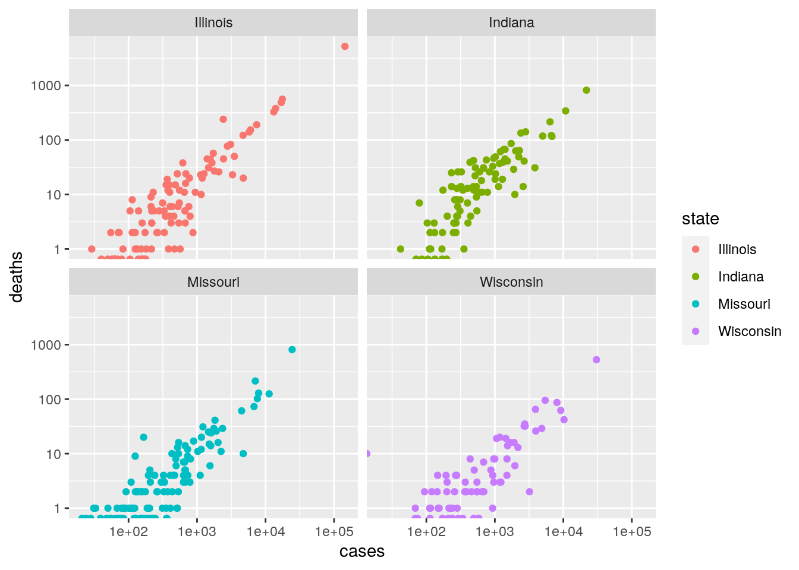
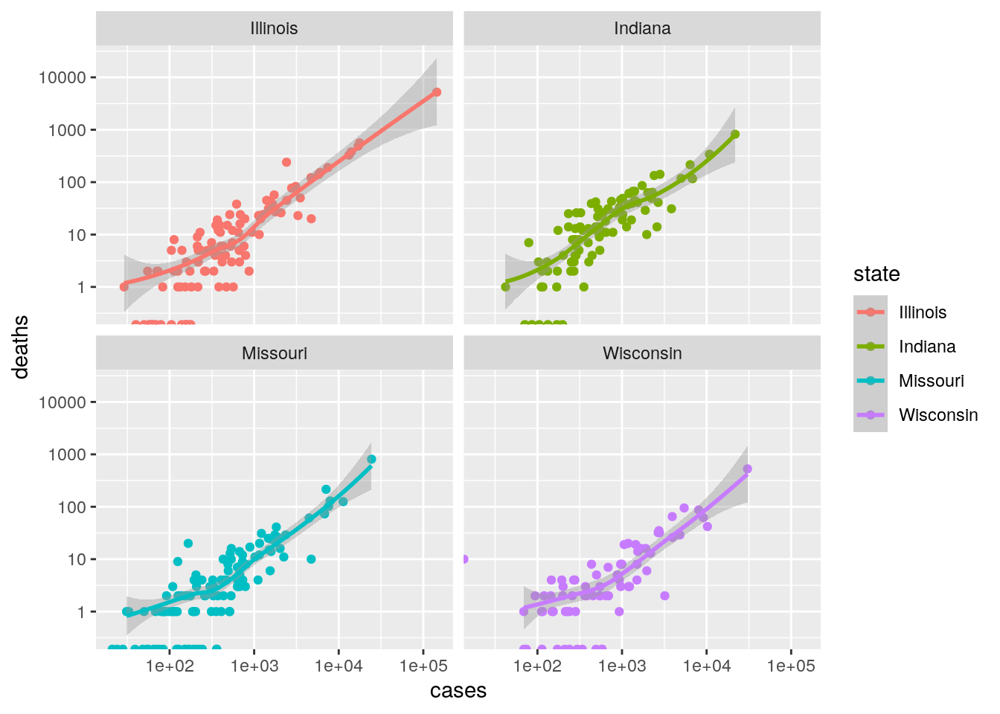
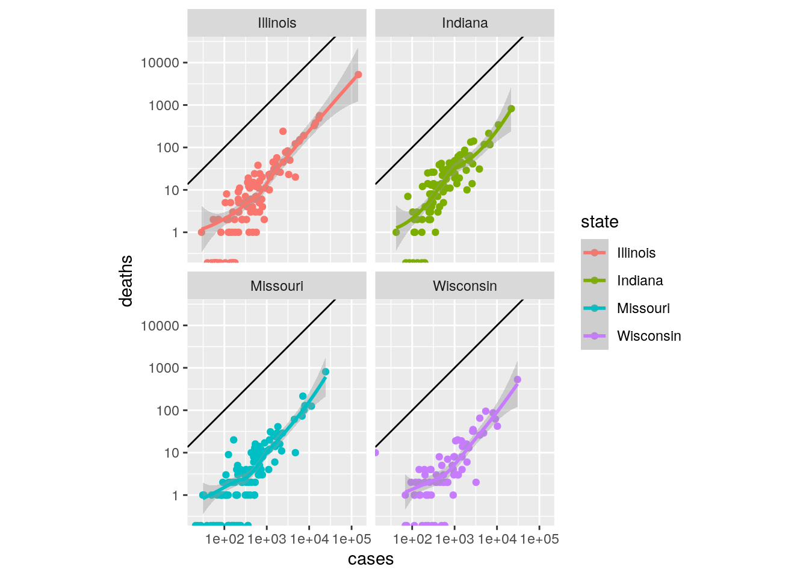

Lecture 13 Faceting
In many cases, we would like to produce a multi-panel graph, in which each panel shows the data for a certain combination of parameters. In ggplot2 this is called faceting: the command facet_grid is used when you want to produce a grid of panels, in which all the panels in the same row (or column) have axes-ranges in common; facet_wrap is used when the different panels do not necessarily have axes-ranges in common.
For example:
pl <- ggplot(data = dt[dt$state %in% c("Illinois", "Missouri", "Wisconsin", "Indiana"), ]) +
aes(x = cases, y = deaths, colour = state) + geom_point() + scale_x_log10() + scale_y_log10()
pl <- pl + facet_wrap(~state)
pl
Let’s add a line separating showing the best-fit line:

Make ranges on x and y axes equal, and add the 1:1 line:
